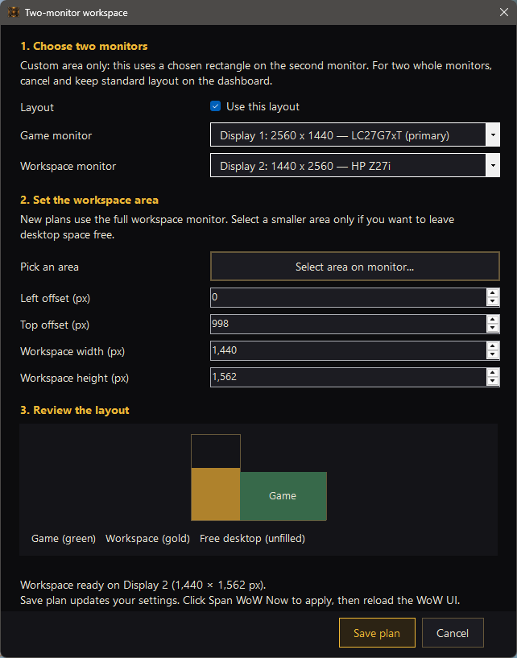
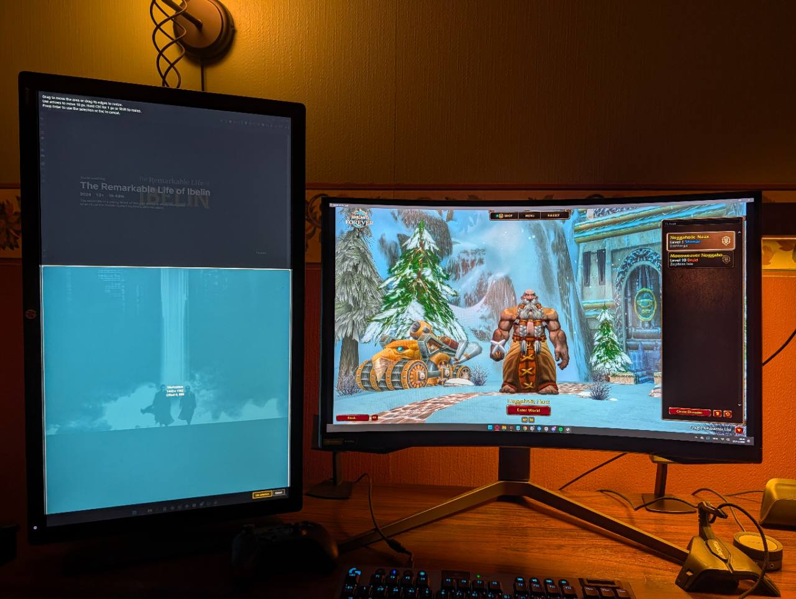
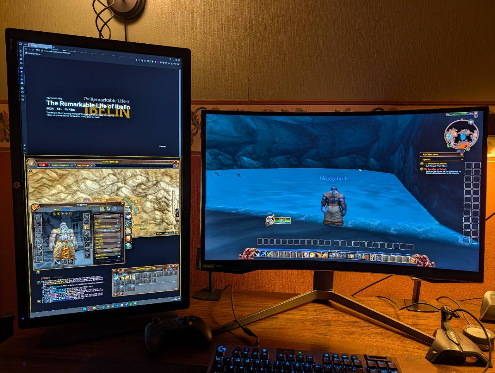
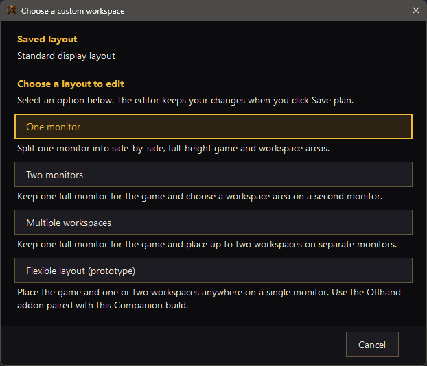
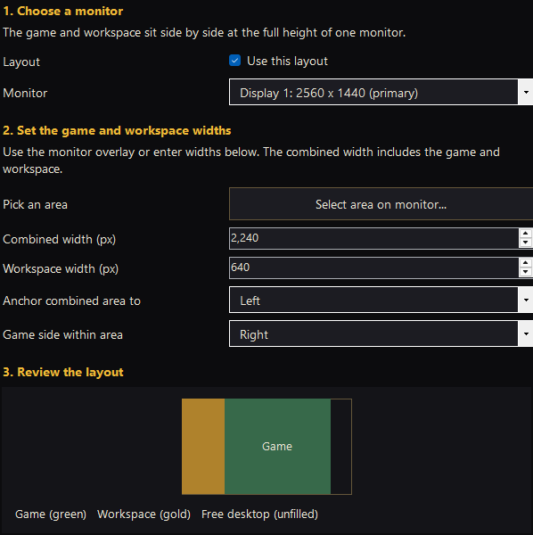
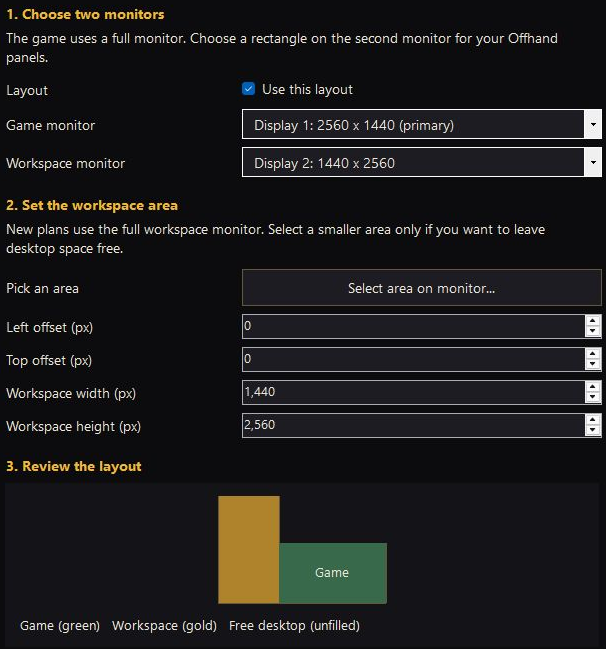
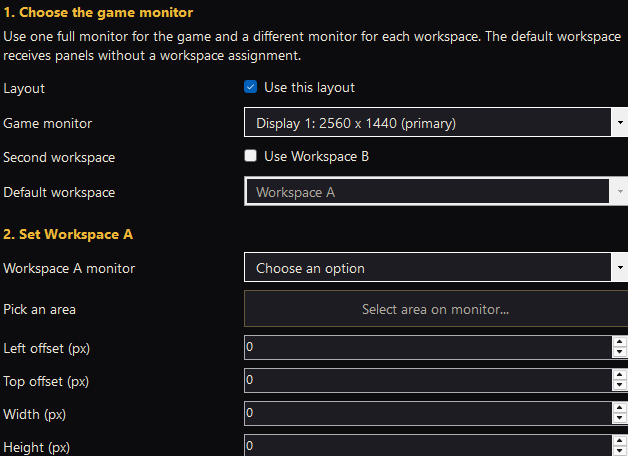
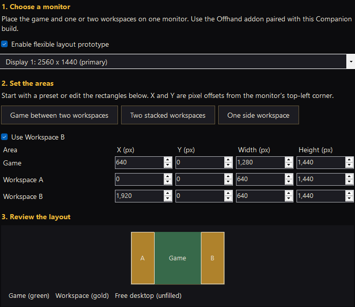
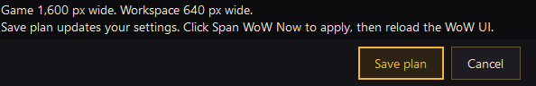
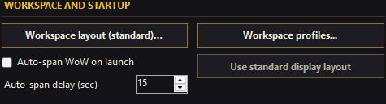

Standard: the usual starting point
Use the full game monitor and full Offhand monitor, or the equal single-display split. Choose screens and Mainhand on the Setup tab. No custom editor is needed.
For example, put your WoW map and bags in the lower part of monitor two and a browser window above them. Windows Companion limits WoW to the game screen and the workspace you select. Your browser stays clickable in its own area without an always-on-top utility.
Start with the Offhand addon and Windows Companion installed and WoW in Windowed mode.
/reload to load the new layout.


Use the full game monitor and full Offhand monitor, or the equal single-display split. Choose screens and Mainhand on the Setup tab. No custom editor is needed.
Reserve part of a screen for desktop apps, give game and workspace unequal widths, or add workspace regions. The custom editor lets you choose those rectangles instead of using the standard full-monitor areas.
Install Offhand Companion from Microsoft Store and the Offhand addon for the WoW client you play. Keep both up to date. A Store update does not update the addon.
Before changing the canvas, save a copy of your Blizzard Edit Mode layout and back up UI addon profiles. Set WoW to ordinary Windowed mode, enter the game world, and leave Auto-span WoW on launch off in Advanced.
In Companion, open Advanced → Workspace layout and choose the editor that fits the areas you want.

Choose One monitor in the editor.

Choose this for a side-by-side split with your own game and workspace widths. Both areas use the monitor's full height. Select the monitor, game side, occupied area and workspace width in the editor.
Example: reserve a narrow workspace beside a wider game area on an ultrawide. For an equal 32:9/32:10 split, standard setup is simpler.
Choose Two monitors in the editor only when you want a partial workspace, not the whole screen.

Keep one full display for the game and choose a rectangular workspace on a second display. Select distinct game and workspace monitors, then set the workspace's position and size.
Choose Multiple workspaces in the editor.

Keep a full game monitor and define one or two workspace regions on separate displays. Choose the game screen, workspace A, optional workspace B, and Default workspace.
The default workspace is the default destination when a panel has no more specific placement. Give each area enough room for the panels you intend to use.

This advanced option places the game and one or two workspace rectangles on a single monitor. Choose a preset or enter the rectangles, then inspect the preview for position, size and gaps.
The published control is labelled prototype. It requires the paired addon. Begin with a simpler mode unless you need this arrangement.
Where available, choose Select area on monitor. Drag the area to move it or drag its edges to resize it. Arrow keys move the area; Ctrl + arrow moves one pixel and Shift + arrow resizes. Press Enter to accept or Esc to return to the editor.
Editor dimensions use physical pixels. Check which monitor is selected before entering offsets. The preview shows the occupied game/workspace areas and remaining desktop. Areas must fit their selected displays without overlapping; resolve any validation message before saving.
Saving settings, moving WoW, and loading the new geometry inside WoW are three separate actions.

/reload to load the new geometry.Open /offhand. In Panel layout → Where panels open, choose destinations for supported panel groups such as Map, Character, Spells, Collections, Achievements and Journal. A panel you drag manually keeps that placement. Use routing again asks before clearing that group's manual positions. Bags, chat and third-party panels retain their existing behavior.
To resize supported panels inside an existing workspace, use Panel layout → In-game window scale in WoW.
In Appearance, each active region can inherit the global appearance or use its own theme, background and image fit. These choices style the workspace canvas, not Blizzard's panels. Inactive regions cannot be edited.
For a custom background, open Background Studio and preview Custom dimensions using that region's width and height from Companion. Preview each differently shaped region separately. Studio preview dimensions do not resize WoW. Install the generated media package beside Offhand and fully restart WoW before selecting the installed image.
Use the Edit Mode instructions for protected HUD controls and the in-game recovery guide for missing panels. Avoid rebuilding a working HUD just to move an ordinary panel.
On later launches, use Span WoW Now to apply your saved workspace. In Companion 2.1.9-beta.4, you can enable Auto-span WoW on launch after spanning the plan by hand once. If the plan or monitors change, span by hand again. If you are already in the world, type /reload once to load the changed layout before checking your panels. Keep Companion open if you need its remembered Restore Window state or active recovery.
| Where | What it saves | What it does not replace |
|---|---|---|
| Companion: Workspace profiles | Named Multiple workspaces display plans, including selected monitors and areas. | Addon panel arrangement and Blizzard HUD editing. |
| Addon: Profiles → Panel presets | Panel placement, routing, panel size and workspace appearance within the current general addon profile. | Physical display geometry or calibration. |
| Addon: general profiles | The broader Offhand preferences containing those workspace layouts. | Companion's display plans. |
| Blizzard Edit Mode | Protected HUD controls such as action bars and unit frames. | Ordinary workspace panels or native window placement. |

For a reusable Multiple workspaces plan, open Advanced → Workspace profiles… and save it under a useful name. Changes in that dialog remain staged until Save changes. To switch, choose the plan, click Load selected, then Save changes. Apply it using the save-and-apply sequence.
For example, save a plan called “Map and inventory”. Arrange panels in WoW after applying it. When the paired addon first sees a named plan, it creates an associated panel preset from the current one. Later applications can restore that plan's associated layout. You can still select a different in-game panel preset manually.
A saved plan needs its configured monitors at the saved resolutions. A missing or changed display requires review. Deleting a Companion plan does not delete its in-game panel preset.
Save plan only stores settings. Click Span WoW Now, then reload the WoW UI. Check the active plan and each visible region before moving panels.
Reconnect the configured display and check its Windows resolution. Use Identify Displays to review roles. Do not repeatedly apply an old plan to an unfamiliar screen arrangement. Use Restore Window to return to a usable window.
A saved custom plan is restored on launch until you switch back. Follow the return-to-standard instructions. Your named plans remain available for later.
First verify the applied geometry and reload. Then check its route and any manual placement. Follow the targeted panel recovery steps before gathering every window or rebuilding the HUD.
For support, include Companion and addon versions, your WoW client, the plan preview, and what happened after Span WoW Now and reload. Use Advanced → Display Diagnostics → Copy Display Diagnostics in Companion and /offhand diag full in WoW. Remove private account, character or chat details before sharing.
Companion display, color and scaling troubleshooting · Back to standard setup